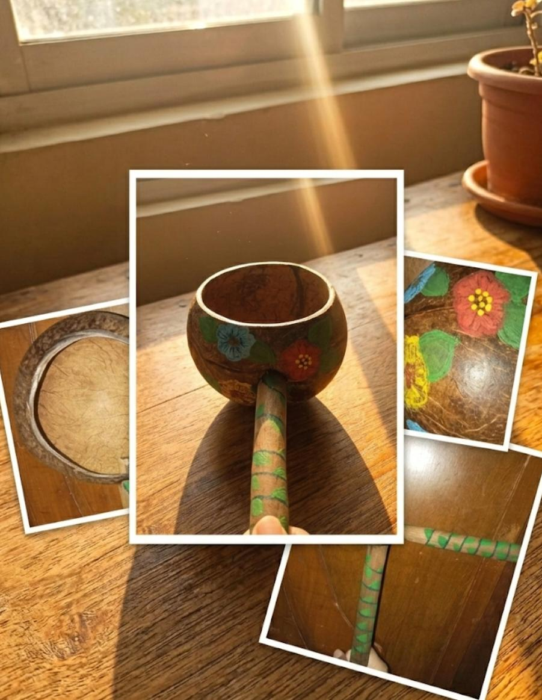

Produk Kami

Gayung Batok Kelapa
Gayung batok kelapa merupakan warisan nenek moyang yang mencerminkan kearifan lokal dalam memanfaatkan bahan alam yang tersedia di sekitar lingkungan.

Celengan Batok Kelapa
Celengan dari batok kelapa adalah wadah penyimpanan uang yang terbuat dari tempurung kelapa yang telah dikeringkan, dibersihkan, dan diolah sedemikian rupa hingga menjadi bentuk yang menarik dan fungsional.